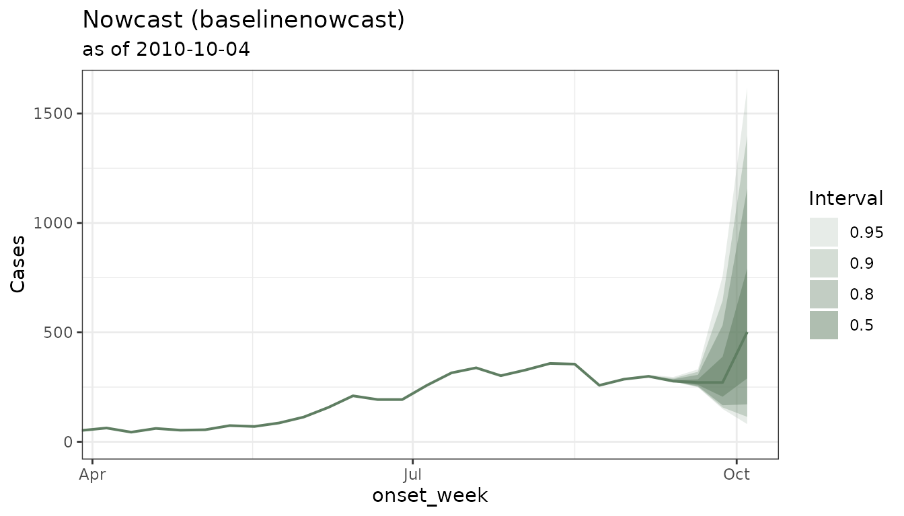
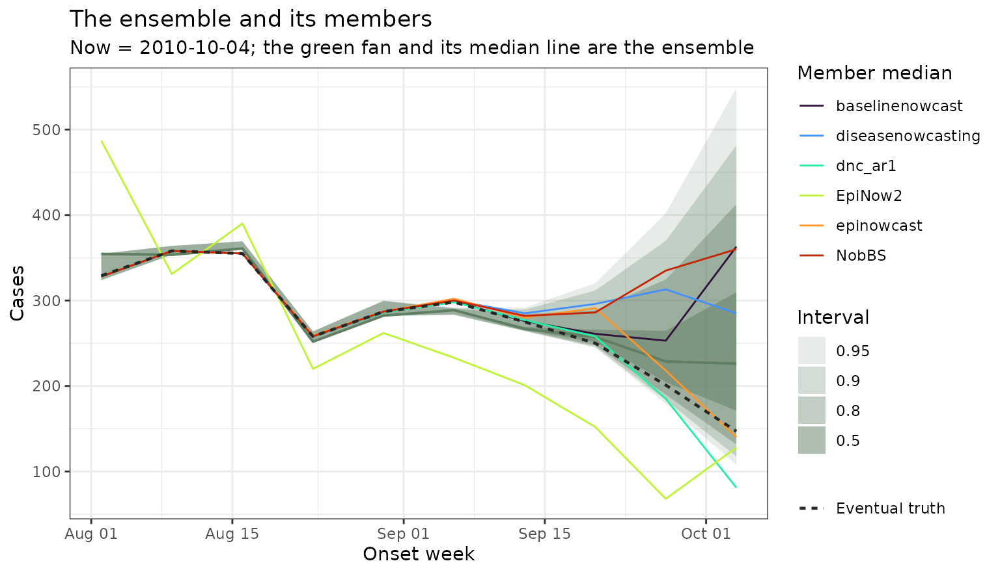

One call, many models: run_nowcast(), custom backends and ensembles
ensemble-nowcasting.RmdEverything on this page is experimental.
run_nowcast(), nowcast_ensemble(),
nowcast_backtest(), nowcast_weights(),
score_nowcast() and the tbl_nowcast class are
all marked experimental:
they work, they are tested, and their interfaces may still
change — argument names, defaults and the shape of what comes
back. The extension (nowcast_fit() /
nowcast_tidy()) is the part most likely to move, because it
is the most recent.
Why this vignette?
This vignette is about how to run nowcasts from different
R packages all within the same tbl_now
framework as well as on how to backtest and do ensembles.
Here we describe how:
-
engine_*()says which model to fit and with what arguments, -
run_nowcast(x, engine)fits any supported package and always returns the same kind of object, -
nowcast_ensemble()combines several of those objects into an ensemble, -
nowcast_backtest()andnowcast_weights()decide, from data, how much each member should count, - and
nowcast_fit()/nowcast_tidy()let you add a nowcasting framework that has not been built intotbl.now.
Two ways to do the same. You can either use
run_nowcast(x, engine_epinowcast()) as explained in this
vignette or step by step:
tbl_now_to_epinowcast(x) |> epinowcast::epinowcast() |> tidy()Ideally you should:
Use the converter when you want to pass that package’s own arguments, inspect what it was handed, or do something the
tbl.nowbackend does not.Use
run_nowcast()when you want several models that can be compared vianowcast_ensemble()andscore_nowcast().
The examples below use dengue in Puerto Rico: a weekly line list: one row per case, with an onset and a report week.
dengue <- denguedat |>
tbl_now(
event_date = onset_week,
report_date = report_week,
verbose = FALSE
)
# Nowcast as of a date in the past, so that later reports exist to score against
now <- as.Date("2010-10-04") # a Monday: these weeks start on Mondays
snapshot <- dengue |>
filter(report_week <= now) |>
change_now(now = now)
get_now(snapshot)
#> [1] "2010-10-04"1. One call per model
run_nowcast() takes two things: the
tbl_now, and an engine.
baseline <- run_nowcast(
snapshot,
engine_baselinenowcast(draws = 1000),
verbose = FALSE
)
baseline#> -- A <tbl_nowcast> from method "baselinenowcast" -------------------------------
#> * now: "2010-10-04"
#> * event dates: 144
#> * quantile levels: 0.025, 0.05, 0.1, 0.25, 0.5, 0.75, 0.9, 0.95, and 0.975
#> * draws: 1000
#> # A tibble: 6 x 3
#> onset_week .quantile_level .value
#> <date> <dbl> <dbl>
#> 1 2008-01-07 0.025 22
#> 2 2008-01-07 0.05 22
#> 3 2008-01-07 0.1 22
#> 4 2008-01-07 0.25 22
#> 5 2008-01-07 0.5 22
#> 6 2008-01-07 0.75 22
#> i 1290 more rows. Use `as_tibble()` for all of them.An engine is the model and everything it needs:
engine_baselinenowcast() names
baselinenowcast’s own arguments, and there is one such
constructor per supported package. The data and verbose are
the only things that sit outside it.
That is not decoration. Before engines, arguments travelled in a
... on run_nowcast() and in a
method_args list of lists on
nowcast_backtest(), and both failed the same silent way: an
argument that missed its backend simply vanished, and you got a fitted
model at its default with nothing to say so. A named formal turns that
into an error at the call, where you can see it.
engine_baselinenowcast(draws = 1000)
#> ── <nowcast_engine: "baselinenowcast"> ─────────────────────────────────────────
#> • quantile levels: 0.025, 0.05, 0.1, 0.25, 0.5, 0.75, 0.9, 0.95, and 0.975
#> • arguments: drawslist_nowcast_methods() tells you what is available in
your session:
list_nowcast_methods()
#> [1] "baselinenowcast" "EpiNow2" "epinowcast" "example"
#> [5] "NobBS" "surveillance"One card per engine
Each of these routes through the tbl_now_to_*()
converter documented in vignette("nowcasting-models"),
which is where you go to learn a package’s own API. What follows is the
other half: the call through run_nowcast(), and the
one thing about that engine most likely to catch you
out.
baselinenowcast
Fast, assumption-light, and the only engine here that needs no external toolchain. It works from a reporting triangle, so the delay axis is a modelling choice you make.
baseline <- run_nowcast(snapshot, engine_baselinenowcast(draws = 1000)) # fitted aboveWatch for: max_delay caps the
triangle’s width. Left unset it is inferred from the longest
delay present, so a single straggler can give the triangle hundreds of
near-empty columns and turn a fast fit into a slow one. It keeps draws,
so it can join a type = "linear_pool" ensemble.
diseasenowcasting
The one engine that takes the tbl_now
directly: it reads the strata and the temporal-effect
columns off the object, so there is nothing to pass.
dnc <- run_nowcast(snapshot, engine_diseasenowcasting())
dnc#> -- A <tbl_nowcast> from method "diseasenowcasting" -----------------------------
#> * now: "2010-10-04"
#> * event dates: 144
#> * quantile levels: 0.025, 0.05, 0.1, 0.25, 0.5, 0.75, 0.9, 0.95, and 0.975
#> * draws: 2000
#> # A tibble: 6 x 3
#> onset_week .quantile_level .value
#> <date> <dbl> <dbl>
#> 1 2008-01-07 0.025 22
#> 2 2008-01-07 0.05 22
#> 3 2008-01-07 0.1 22
#> 4 2008-01-07 0.25 22
#> 5 2008-01-07 0.5 22
#> 6 2008-01-07 0.75 22
#> i 1290 more rows. Use `as_tibble()` for all of them.Watch for: it is also the one engine whose
model you can swap without changing packages — see the ensemble
below, which uses two of them. On count-cumulative data
that revises downwards, pass a
model(confirmation = confirmation_process()), or the
de-accumulated negatives have nowhere to go.
epinowcast
A flexible Bayesian model with separate modules for the reporting
delay and the reference process. Preprocessing arguments go through
preprocess_args; everything else goes to
epinowcast() itself.
enw <- run_nowcast(snapshot, engine_epinowcast(
preprocess_args = list(max_delay = 10),
fit = epinowcast::enw_fit_opts(
sampler = epinowcast::enw_pathfinder, draws = 1000, seed = 20260824
),
# The slowest engine here, and it scales with the number of REFERENCE dates,
# so it gets a window where the others get the whole series. See below.
min_date = 96
))
enw#> -- A <tbl_nowcast> from method "epinowcast" ------------------------------------
#> * now: "2010-10-04"
#> * event dates: 10
#> * quantile levels: 0.025, 0.05, 0.1, 0.25, 0.5, 0.75, 0.9, 0.95, and 0.975
#> * draws: 1000
#> # A tibble: 6 x 3
#> onset_week .quantile_level .value
#> <date> <dbl> <dbl>
#> 1 2010-08-02 0.025 328
#> 2 2010-08-02 0.05 328
#> 3 2010-08-02 0.1 328
#> 4 2010-08-02 0.25 328
#> 5 2010-08-02 0.5 328
#> 6 2010-08-02 0.75 328
#> i 84 more rows. Use `as_tibble()` for all of them.Watch for: it is unseeded unless
you say otherwise. enw_fit_opts() passes ...
to the sampler, so seed = reaches Stan — without it, the
same fit can take forty minutes on one run and six hours on the next,
and neither reproduces. It handles a weekly object natively
(timestep = "week"), so its reference dates line up with
the object’s grid.
NobBS
Nowcasting by Bayesian Smoothing. Needs JAGS installed as a separate program.
nobbs <- run_nowcast(snapshot, engine_nobbs(max_D = 10, moving_window = 64))
nobbs#> -- A <tbl_nowcast> from method "NobBS" -----------------------------------------
#> * now: "2010-10-04"
#> * event dates: 64
#> * quantile levels: 0.025, 0.05, 0.1, 0.25, 0.5, 0.75, 0.9, 0.95, and 0.975
#> * draws: none (quantiles only)
#> # A tibble: 6 x 3
#> onset_week .quantile_level .value
#> <date> <dbl> <dbl>
#> 1 2009-07-20 0.025 28
#> 2 2009-07-20 0.05 28
#> 3 2009-07-20 0.1 28
#> 4 2009-07-20 0.25 28
#> 5 2009-07-20 0.5 28
#> 6 2009-07-20 0.75 28
#> i 570 more rows. Use `as_tibble()` for all of them.Watch for: it keeps no draws per event
date, so it cannot join a type = "linear_pool"
ensemble, and it can only report quantiles it was asked for at fit
time: pass specs = list(quantiles = ...) and
tidy(fit, probs =) will return them, but a level it never
computed is an error rather than an approximation. It also counts
rows, so the converter expands your counts to one row
per case — trim before fitting on a long series.
surveillance
The classic Höhle & an der Heiden nowcast. No external toolchain for the method used here.
sur <- run_nowcast(snapshot, engine_surveillance(D = 10))
sur#> -- A <tbl_nowcast> from method "surveillance" ----------------------------------
#> * now: "2010-10-04"
#> * event dates: 11
#> * quantile levels: 0.025, 0.5, and 0.975
#> * draws: none (quantiles only)
#> # A tibble: 6 x 3
#> onset_week .quantile_level .value
#> <date> <dbl> <dbl>
#> 1 2010-07-26 0.025 302
#> 2 2010-07-26 0.5 302
#> 3 2010-07-26 0.975 302
#> 4 2010-08-02 0.025 328
#> 5 2010-08-02 0.5 328
#> 6 2010-08-02 0.975 329
#> i 27 more rows. Use `as_tibble()` for all of them.Watch for: surveillance::nowcast() has
no strata argument at all, so
run_nowcast() fits one model per stratum and labels the
blocks for you. Both date grids it needs come from the object via
get_surveillance_when() and
get_surveillance_range() — the second matters because a
line list cannot express a zero, so the quiet days at the
now edge would otherwise fall off the grid entirely.
EpiNow2
A renewal-equation model of the infection process, with the reporting correction supplied separately.
en2 <- run_nowcast(snapshot, engine_epinow2(
generation_time = EpiNow2::gt_opts(EpiNow2::example_generation_time),
delays = EpiNow2::delay_opts(EpiNow2::example_incubation_period),
stan = EpiNow2::stan_opts(
method = "pathfinder", backend = "cmdstanr", samples = 500
),
min_date = 96
))
en2#> -- A <tbl_nowcast> from method "EpiNow2" ---------------------------------------
#> * now: "2010-10-04"
#> * event dates: 96
#> * quantile levels: 0.025, 0.05, 0.1, 0.25, 0.5, 0.75, 0.9, 0.95, and 0.975
#> * draws: 500
#> # A tibble: 6 x 3
#> onset_week .quantile_level .value
#> <date> <dbl> <dbl>
#> 1 2008-12-08 0.025 37
#> 2 2008-12-08 0.05 37
#> 3 2008-12-08 0.1 37
#> 4 2008-12-08 0.25 37
#> 5 2008-12-08 0.5 37
#> 6 2008-12-08 0.75 37
#> i 858 more rows. Use `as_tibble()` for all of them.Watch for: EpiNow2 has no timestep — it
always models a daily process. The converter therefore lays a
weekly object onto EpiNow2’s daily grid, putting each week’s count on
the week-ending day and marking the rest accumulate = TRUE.
EpiNow2 honours that on the way out as well as in the likelihood, so
predictions come back on your grid at
your scale; you do not have to undo anything. It is
also the one engine here that forecasts — it returns one period
past the end of the data — and run_nowcast() drops that,
because a nowcast estimates what has already happened.
Its priors are not fitted from your data unless you say
so. The generation time and incubation period default to
EpiNow2’s shipped examples. Those are properties of transmission rather
than of reporting, and no amount of reporting data identifies them — but
they are still an assumption you are making, not a detail. See
vignette("nowcasting-models") for fitting the truncation
from the report dimension, which is what a tbl_now
measures.
How much history to fit on: min_date
The engines above are not shown the same data, and that is deliberate.
baselinenowcast and diseasenowcasting take
the whole series in their stride: one estimates a delay
distribution from the reporting triangle, the other fits a state-space
model whose cost grows gently with the number of periods. More history
is more information about the delay, and there is no reason to throw it
away.
epinowcast and EpiNow2 are different. Both
scale with the number of reference dates they are given
– epinowcast carries a parameter block per reference date,
EpiNow2 models a latent infection curve over every day of
it – so a series that costs baselinenowcast a second costs
them an afternoon. Trimming them is not a workaround; it is a modelling
decision about how much history the reporting process is assumed to be
stable over.
min_date puts that decision on the
engine, so each model gets the window it needs and no global
filter() has to be applied to all of them at once:
run_nowcast(snapshot, engine_epinowcast(min_date = 96)) # last 96 weeks
run_nowcast(snapshot, engine_epinowcast(min_date = as.Date("2009-01-05")))
run_nowcast(snapshot, engine_baselinenowcast()) # whole seriesIt takes either shape:
min_date |
means |
|---|---|
NULL (default) |
the whole series |
a Date
|
keep event dates on or after it |
| a number | keep the last n periods before now, in the
object’s own units
|
The number is usually what you want, and in a
nowcast_backtest() it is the only one that behaves:
now moves between fits, so a fixed calendar cut makes the
fitted window grow as the backtest walks forward, and
the last fit is trained on more data than the first.
min_date = 96 on this weekly object is ninety-six weeks at
every retrospective date.
min_date trims the event axis, not
now. The nowcast is still made as of the same
date, and the trimmed object is what the result carries – so
score_nowcast() and autoplot()’s reported
counts describe the series the model was actually shown.
What you get back
Every method returns a tbl_nowcast. Whatever the package
produced — a Stan fit, a matrix of samples, a data frame of quantiles —
the predictions are always in the same tidy shape:
as_tibble(baseline)#> # A tibble: 1,296 × 3
#> onset_week .quantile_level .value
#> <date> <dbl> <dbl>
#> 1 2008-01-07 0.025 22
#> 2 2008-01-07 0.05 22
#> 3 2008-01-07 0.1 22
#> 4 2008-01-07 0.25 22
#> 5 2008-01-07 0.5 22
#> 6 2008-01-07 0.75 22
#> 7 2008-01-07 0.9 22
#> 8 2008-01-07 0.95 22
#> 9 2008-01-07 0.975 22
#> 10 2008-01-14 0.025 19
#> # ℹ 1,286 more rowsand, when the backend is sample-based, the draws are there too:
as_tibble(baseline, type = "draws")#> # A tibble: 144,000 × 3
#> onset_week .draw .value
#> <date> <int> <dbl>
#> 1 2008-01-07 1 22
#> 2 2008-01-07 2 22
#> 3 2008-01-07 3 22
#> 4 2008-01-07 4 22
#> 5 2008-01-07 5 22
#> 6 2008-01-07 6 22
#> 7 2008-01-07 7 22
#> 8 2008-01-07 8 22
#> 9 2008-01-07 9 22
#> 10 2008-01-07 10 22
#> # ℹ 143,990 more rows
tidy() works here too
as_tibble() gives you the quantiles in full.
tidy() gives you the same summary table every other
engine in this package produces — the one documented at
?tidy.nowcast — so a nowcast fitted through
run_nowcast() and one fitted by calling a package by hand
are read the same way:
tidy(baseline)#> # A tibble: 144 × 7
#> event_date stratum estimate conf.low conf.high level engine
#> <date> <chr> <dbl> <dbl> <dbl> <dbl> <chr>
#> 1 2008-01-07 all 22 22 22 0.95 baselinenowcast
#> 2 2008-01-14 all 19 19 19 0.95 baselinenowcast
#> 3 2008-01-21 all 8 8 8 0.95 baselinenowcast
#> 4 2008-01-28 all 14 14 14 0.95 baselinenowcast
#> 5 2008-02-04 all 5 5 5 0.95 baselinenowcast
#> 6 2008-02-11 all 5 5 5 0.95 baselinenowcast
#> 7 2008-02-18 all 4 4 4 0.95 baselinenowcast
#> 8 2008-02-25 all 11 11 11 0.95 baselinenowcast
#> 9 2008-03-03 all 2 2 2 0.95 baselinenowcast
#> 10 2008-03-10 all 2 2 2 0.95 baselinenowcast
#> # ℹ 134 more rowsThose first weeks look odd until you notice what they are:
estimate, conf.low and conf.high
are identical because early 2008 was settled long
before this now. Every case had been reported, so there is
nothing left to nowcast and no uncertainty to report. The interesting
rows are at the now end.
Two columns there are read off the object rather than assumed.
engine is the method that produced it. level
is the width of the widest symmetric pair of quantiles the
nowcast actually carries — 0.95 for the default
nowcast_quantile_levels(), 0.8 for a nowcast
summarised at c(0.1, 0.5, 0.9), and NA when no
symmetric pair exists at all. A guessed width would defeat the point of
the column, which is to stop a 90% band being compared with a 95% one as
though they were the same thing.
Nothing is thrown away. The fit property still holds the
backend’s own object, so you can keep using that package’s
diagnostics:
class(baseline@fit)
#> [1] "baselinenowcast_df" "data.frame"And there is an autoplot() method for a quick look. It
is drawn in green, the colour this package reserves for
the epidemic process — a nowcast is an estimate of what
happened, not of when we found out:
autoplot(baseline)
Strata are handled for you
When the tbl_now declares strata,
run_nowcast() does whatever that backend needs to honour
them — one reporting triangle per stratum for
baselinenowcast, NobBS.strat() instead of
NobBS(), one fit per stratum for surveillance,
regional_epinow() instead of
estimate_infections() — and the stratum ends up as an
ordinary column of the output:
dengue_by_sex <- denguedat |>
filter(onset_week >= as.Date("2008-01-01")) |>
count(onset_week, report_week, gender, name = "n") |>
tbl_now(
event_date = onset_week, report_date = report_week, case_count = n,
strata = gender, data_type = "count-incidence", verbose = FALSE
) |>
filter(report_week <= now) |>
change_now(now = now)
by_sex <- run_nowcast(dengue_by_sex, "baselinenowcast", draws = 1000, verbose = FALSE)
as_tibble(by_sex)#> # A tibble: 2,556 × 4
#> onset_week gender .quantile_level .value
#> <date> <chr> <dbl> <dbl>
#> 1 2008-01-07 Female 0.025 9
#> 2 2008-01-07 Female 0.05 9
#> 3 2008-01-07 Female 0.1 9
#> 4 2008-01-07 Female 0.25 9
#> 5 2008-01-07 Female 0.5 9
#> 6 2008-01-07 Female 0.75 9
#> 7 2008-01-07 Female 0.9 9
#> 8 2008-01-07 Female 0.95 9
#> 9 2008-01-07 Female 0.975 9
#> 10 2008-01-07 Male 0.025 13
#> # ℹ 2,546 more rowstidy() labels each block with its stratum, so
(stratum, event_date) is a unique key and the two series
can never be confused for one another:
tidy(by_sex)#> # A tibble: 284 × 7
#> event_date stratum estimate conf.low conf.high level engine
#> <date> <chr> <dbl> <dbl> <dbl> <dbl> <chr>
#> 1 2008-01-07 Female 9 9 9 0.95 baselinenowcast
#> 2 2008-01-14 Female 9 9 9 0.95 baselinenowcast
#> 3 2008-01-21 Female 3 3 3 0.95 baselinenowcast
#> 4 2008-01-28 Female 4 4 4 0.95 baselinenowcast
#> 5 2008-02-04 Female 3 3 3 0.95 baselinenowcast
#> 6 2008-02-11 Female 2 2 2 0.95 baselinenowcast
#> 7 2008-02-18 Female 3 3 3 0.95 baselinenowcast
#> 8 2008-02-25 Female 5 5 5 0.95 baselinenowcast
#> 9 2008-03-10 Female 1 1 1 0.95 baselinenowcast
#> 10 2008-03-17 Female 1 1 1 0.95 baselinenowcast
#> # ℹ 274 more rowsIf a backend genuinely cannot stratify, it warns and pools rather than pretending.
2. Scoring a nowcast
score_nowcast() compares the predictive quantiles with
what was eventually observed, using the weighted interval score (WIS) of
Bracher et al. (2021), plus the absolute error of the
median and the 50% and 90% interval coverage.
Scoring only makes sense against data the model had not seen, which
is why snapshot was truncated at now and the
truth comes from the full series:
score_nowcast(baseline, truth = dengue)#> # A tibble: 144 × 7
#> .method onset_week .observed wis ae_median coverage_50 coverage_90
#> <chr> <date> <int> <dbl> <dbl> <lgl> <lgl>
#> 1 baselinenowcast 2008-01-07 22 0 0 TRUE TRUE
#> 2 baselinenowcast 2008-01-14 19 0 0 TRUE TRUE
#> 3 baselinenowcast 2008-01-21 8 0 0 TRUE TRUE
#> 4 baselinenowcast 2008-01-28 14 0 0 TRUE TRUE
#> 5 baselinenowcast 2008-02-04 5 0 0 TRUE TRUE
#> 6 baselinenowcast 2008-02-11 5 0 0 TRUE TRUE
#> 7 baselinenowcast 2008-02-18 4 0 0 TRUE TRUE
#> 8 baselinenowcast 2008-02-25 11 0 0 TRUE TRUE
#> 9 baselinenowcast 2008-03-03 2 0 0 TRUE TRUE
#> 10 baselinenowcast 2008-03-10 2 0 0 TRUE TRUE
#> # ℹ 134 more rowsLower WIS is better; coverage_90 should be
TRUE about nine times in ten if the intervals are
honest.
If you would rather use the full score suite,
as_scoringutils() reshapes the same object into the format
it expects:
baseline |>
as_scoringutils(truth = dengue) |>
scoringutils::as_forecast_quantile() |>
scoringutils::score()tbl.now’s own wis and the one computes
agree to machine precision — the package’s test suite checks exactly
that, on the same numbers, rather than trusting either implementation on
its own.
3. Ensembles
Models fail in different directions, and combining them cancels part
of that: an ensemble is rarely the single best model, but it is also
rarely the worst, which is worth a great deal when you have to commit to
something before you know which epidemic you are facing. How
you combine them matters more than most write-ups admit, and the two
rules below behave differently enough that the choice is worth making
deliberately. Because every run_nowcast() result has the
same shape, combining them is one call.
The members below are the fits from the cards above, so nothing is refitted:
members <- list(
baselinenowcast = baseline,
diseasenowcasting = dnc,
# The SAME package, a different epidemic process. An ensemble is not only a
# hedge across packages -- two structurally different models from one package
# disagree in their own way, and that disagreement is worth combining too.
dnc_ar1 = run_nowcast(
snapshot,
engine_diseasenowcasting(
model = diseasenowcasting::model(
epidemic = diseasenowcasting::ar1_epidemic()
),
label = "dnc_ar1"
)
),
epinowcast = enw,
NobBS = nobbs,
EpiNow2 = en2
)
ensemble <- nowcast_ensemble(members)#> -- A <tbl_nowcast> from method "ensemble" --------------------------------------
#> * now: "2010-10-04"
#> * event dates: 10
#> * quantile levels: 0.025, 0.05, 0.1, 0.25, 0.5, 0.75, 0.9, 0.95, and 0.975
#> * draws: none (quantiles only)
#> # A tibble: 6 x 3
#> onset_week .quantile_level .value
#> <date> <dbl> <dbl>
#> 1 2010-08-02 0.025 324.
#> 2 2010-08-02 0.05 324.
#> 3 2010-08-02 0.1 324.
#> 4 2010-08-02 0.25 354.
#> 5 2010-08-02 0.5 354.
#> 6 2010-08-02 0.75 354.
#> i 84 more rows. Use `as_tibble()` for all of them.The ensemble against its parts
The reason to build one is easier to see than to describe. Each thin
line below is one member’s median, the green fan is the ensemble, and
the dashed line is what those weeks eventually reached. The window is
the ensemble’s own: it keeps only the dates every
member covers, and epinowcast reports just the reference
dates it is nowcasting.

The quantile ensemble against each of its members over the last weeks
before now.
Three things are worth reading off it.
Most members fan out at the now edge
and lie on top of each other before it. That is the shape of the
problem: the settled weeks have nothing left to nowcast, so any sane
model reproduces them, and the disagreement concentrates exactly where
the answer is not yet known. The spread at the right is what an ensemble
exists to absorb.
EpiNow2 is the exception, and it disagrees
everywhere. It is not estimating the same thing as the
others: it fits a latent infection curve and reports the smooth
implied by it, rather than correcting each week’s reported count for its
outstanding delay. A member that is off by a constant factor on settled
weeks is usually a sign of that kind of mismatch rather than of a bad
fit.
And the ensemble’s median sits inside the spread rather than at either edge of it. That is the entire trade: it is rarely the best line on any given week, and it is rarely the worst either — which is worth a great deal when you have to commit before knowing which member was right.
An ensemble reports only what every member can. The
fan above has as many bands as the levels its members share, and here
that is all nine of nowcast_quantile_levels() — every
member either keeps draws or was asked for those levels at fit time. Add
surveillance, which keeps none and reports a fixed
{0.025, 0.5, 0.975}, and the fan collapses to a single 95%
band. That is why it is a card above but not a member here — see the
note below.
These fits use approximate inference.
epinowcast runs through enw_pathfinder() and
EpiNow2 through
stan_opts(method = "pathfinder") so this article rebuilds
in minutes rather than overnight. That is fine for showing how the
ensemble machinery behaves and is not a tuned
posterior for either model — do not read any single member’s band as
that package’s considered answer.
An ensemble is a tbl_nowcast like any other, so it
scores, plots and tidies the same way. Its engine is the
ensemble’s name rather than a package:
tidy(ensemble)#> # A tibble: 10 × 7
#> event_date stratum estimate conf.low conf.high level engine
#> <date> <chr> <dbl> <dbl> <dbl> <dbl> <chr>
#> 1 2010-08-02 all 354. 324. 355. 0.95 ensemble
#> 2 2010-08-09 all 354. 354. 364. 0.95 ensemble
#> 3 2010-08-16 all 361. 361. 370. 0.95 ensemble
#> 4 2010-08-23 all 252. 252. 264. 0.95 ensemble
#> 5 2010-08-30 all 282. 282 300. 0.95 ensemble
#> 6 2010-09-06 all 289. 283 292. 0.95 ensemble
#> 7 2010-09-13 all 267. 264. 292. 0.95 ensemble
#> 8 2010-09-20 all 257. 245. 320. 0.95 ensemble
#> 9 2010-09-27 all 229. 179. 402. 0.95 ensemble
#> 10 2010-10-04 all 226. 108. 549. 0.95 ensembleTwo ways of combining
type = "quantile" (the default) averages the members’
quantiles level by level — vincentization. It is the workhorse
of the forecast hubs, it always applies because every backend produces
quantiles, and it tends to produce narrower intervals
than the members.
type = "linear_pool" instead pools the members’ draws
into a mixture distribution and re-summarises it. It needs draws from
every member and generally produces wider intervals,
because disagreement between models becomes extra spread rather than
being averaged away.
sharp <- nowcast_ensemble(members, type = "quantile")
# The pool needs draws, so it takes the members that have them.
with_draws <- members[c("baselinenowcast", "diseasenowcasting",
"dnc_ar1", "epinowcast")]
wide <- nowcast_ensemble(with_draws, type = "linear_pool", n_draws = 4000)Which one you want depends on whether you read between-model disagreement as noise to be averaged out (quantile) or as genuine uncertainty to be propagated (linear pool).
The linear pool needs draws, and not every backend has
them. Of the six engines above, baselinenowcast,
diseasenowcasting, epinowcast and
EpiNow2 keep per-event-date draws; NobBS and
surveillance report summaries only. (NobBS’s
nowcast.post.samps cover the now date rather
than every event date, which is not the same thing.)
type = "linear_pool" refuses a set of
members that includes one of the two, rather than silently dropping it
and returning a differently-composed ensemble under the same name —
which is why the call above selects its members explicitly.
Members must agree on what they are predicting. An
ensemble combines members target by target, so a date one member covers
and another does not cannot be combined: averaging over whoever happens
to be present would report a single member’s own value as the
ensemble’s. Those targets are dropped, with a warning saying how many.
This is not hypothetical — EpiNow2 forecasts one period
past the end of the data, and before run_nowcast() trimmed
it that lone extra week landed exactly at the now edge,
which is the part of the picture people read.
Why surveillance is not a member here.
There is a principled reason, and it is arithmetic.
surveillance keeps no per-date draws and reports a
fixed {0.025, 0.5, 0.975}, so it cannot be
asked for any other level after the fit. An ensemble reports only the
levels every member carries, so adding it drops the
ensemble from the nine hub levels to those three — one 95% band instead
of a fan — and every other member’s extra resolution is thrown away to
accommodate one that has none.
nowcast_ensemble() warns when this happens rather than
pretending. The fix is at fit time: leave it out, or widen what it
reports where the package lets you (surveillance’s
control$alpha). Nothing in nowcast_ensemble()
treats it specially.
Weights
By default every member counts the same. You can also give weights directly:
nowcast_ensemble(members, weights = c(
baselinenowcast = 0.3, diseasenowcasting = 0.2, dnc_ar1 = 0.1,
epinowcast = 0.2, NobBS = 0.1, EpiNow2 = 0.1
))or learn them from how the members actually performed.
nowcast_backtest() walks back through time: at each
retrospective date it truncates the data to the reports available then,
refits every method, and scores the result against what was eventually
observed.
It takes the same engines you fitted with, so there
is no second place to keep the arguments in step. An engine’s
label becomes its name in the result — which is how one
package appears twice, so the two diseasenowcasting models
above can be weighted separately rather than sharing one weight:
backtest <- nowcast_backtest(
dengue,
engine_baselinenowcast(draws = 1000),
engine_diseasenowcasting(),
engine_diseasenowcasting(
model = diseasenowcasting::model(
epidemic = diseasenowcasting::ar1_epidemic()
),
label = "dnc_ar1"
),
engine_nobbs(max_D = 10, moving_window = 64),
now_dates = now - 7 * 8 * (3:1),
seed = 20260824
)
tidy(backtest)#> # A tibble: 6 × 9
#> method now event_date stratum observed wis ae_median coverage_50
#> <chr> <date> <date> <chr> <dbl> <dbl> <dbl> <lgl>
#> 1 NobBS 2010-04-19 2009-02-02 all 48 0 0 TRUE
#> 2 NobBS 2010-04-19 2009-02-09 all 47 0 0 TRUE
#> 3 NobBS 2010-04-19 2009-02-16 all 43 0 0 TRUE
#> 4 NobBS 2010-04-19 2009-02-23 all 42 0 0 TRUE
#> 5 NobBS 2010-04-19 2009-03-02 all 24 0 0 TRUE
#> 6 NobBS 2010-04-19 2009-03-09 all 27 0 0 TRUE
#> # ℹ 1 more variable: coverage_90 <lgl>Why not every ensemble member is backtested here. A
backtest is length(methods) × length(now_dates) model fits.
epinowcast and EpiNow2 are both Stan models
and each would add three more, so they are left out of this
backtest to keep the article buildable — not because anything stops
them. If you weight an ensemble from a backtest that does not cover
every member, give the uncovered ones weights yourself;
nowcast_ensemble() will not invent them.
tidy() on a backtest gives one row per (method,
now date, target), which goes straight into
dplyr or ggplot2:
#> # A tibble: 3 × 4
#> method mean_wis mean_ae_median coverage_90
#> <chr> <dbl> <dbl> <dbl>
#> 1 diseasenowcasting 0.5 0.97 0.99
#> 2 baselinenowcast 0.7 1.39 0.99
#> 3 NobBS 1.91 2.86 0.97This is the expensive part of the workflow — it is
length(methods) × length(now_dates) model fits — so keep
now_dates short when the members are Bayesian. Pass
seed so the backtest is reproducible: one
set.seed() before the whole thing only pins anything if
every method draws the same random numbers in the same order, which
stops being true the moment you drop a method.
From the backtest, nowcast_weights() offers two
rules:
fitted_weights <- nowcast_weights(backtest, type = "inverse_score")
fitted_weights # w proportional to 1 / mean WIS
nowcast_weights(backtest, type = "optim") # w minimising the ensemble's WIS#> NobBS baselinenowcast diseasenowcasting
#> 0.132 0.360 0.508"inverse_score" is the safe default: it is monotone in
performance, never collapses onto a single model, and cannot overfit.
"optim" searches the simplex for the weights that would
have minimised the ensemble’s WIS over the training window; it is better
in principle, but with only a handful of retrospective dates it happily
overfits, so prefer it when the training window is long.
Either rule plugs straight into the ensemble:
nowcast_ensemble(members, weights = "inverse_score", backtest = backtest)4. Adding your own model
This is the part that makes the whole thing worth building. A
back-end is two S3 methods, and they can live in your
own package, your analysis script, or a one-off chunk. Nothing inside
tbl.now needs to change.
run_nowcast(x, method = "mymodel") builds a little
object of class c("mymodel", "nowcast_method") and
calls
-
nowcast_fit(method, x, ...)— run the model, return whatever it returns; -
nowcast_tidy(method, fit, x, ..., quantile_levels)— describe the result aspredictions(one row per event date, stratum and quantile level) ordraws(one row per event date, stratum and draw). Either may beNULL, not both.
vignette("custom-nowcast-models") is the full account:
what your method may assume about the tbl_now it is handed,
how to reuse the converters instead of reshaping by hand, a complete
worked back-end that needs no modelling package, and what shipping one
in a package involves.
Learning more
- Introduction vignette: https://rodrigozepeda.github.io/tbl.now/articles/tbl.now.html
for the full anatomy of a
tbl_now, data types, and temporal effects. - End-to-end tutorial on real, messy surveillance data — cleaning, diagnostics and nowcasting: https://rodrigozepeda.github.io/tbl.now/articles/Example.html
- Tutorial on diagnosing problems with your dataset, detecting batches and other reporting-delay artifacts: https://rodrigozepeda.github.io/tbl.now/articles/batch-reporting.html
- Using different nowcasting engines for the same dataset: https://rodrigozepeda.github.io/tbl.now/articles/nowcasting-models.html
- Ensemble nowcasting across different engines https://rodrigozepeda.github.io/tbl.now/articles/ensemble-nowcasting.html
- Adding your own nowcasting model https://rodrigozepeda.github.io/tbl.now/articles/custom-nowcast-models.html
- Package reference: https://rodrigozepeda.github.io/tbl.now/reference/